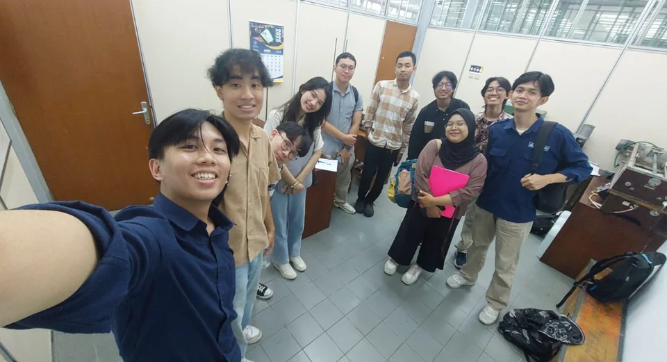
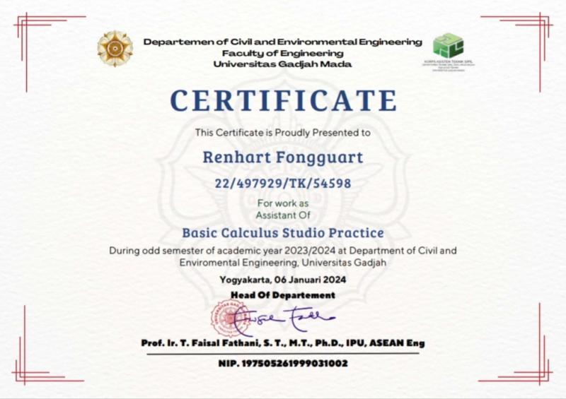
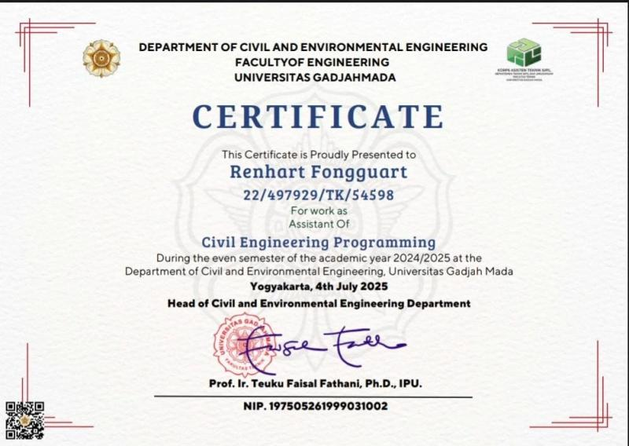
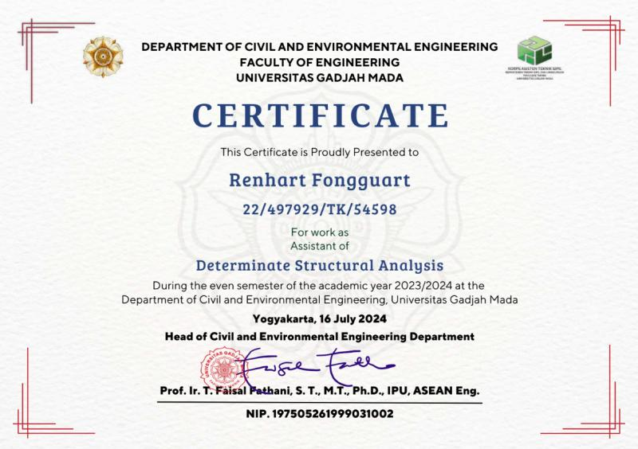
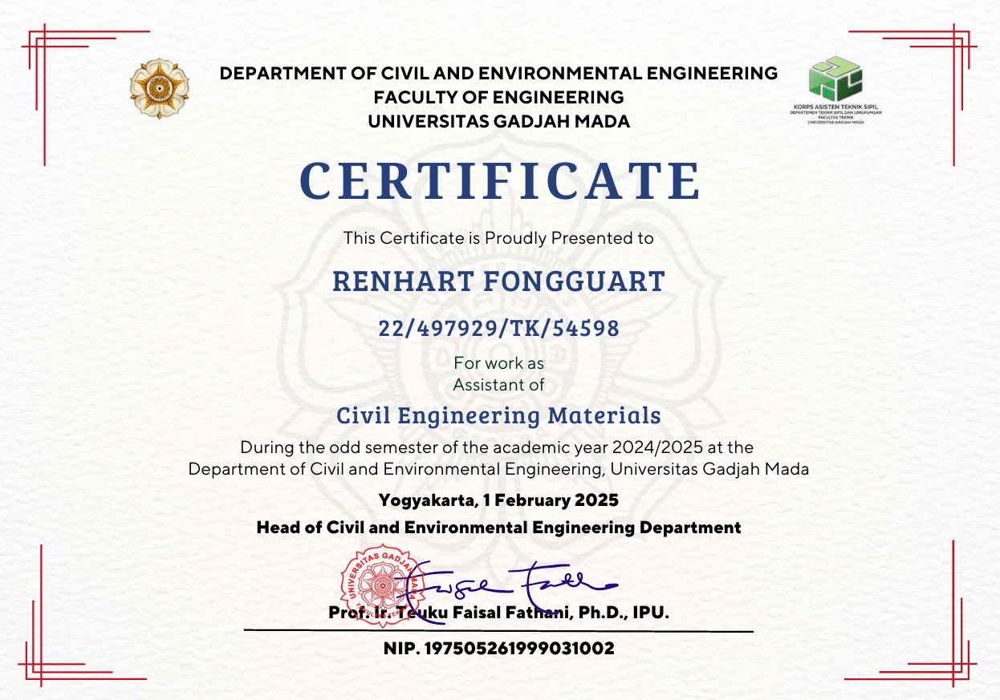
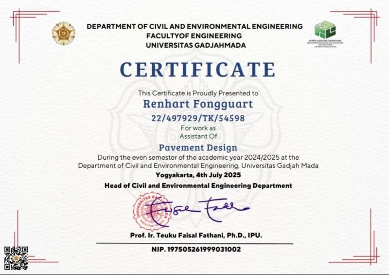

Lecturer & Laboratory Assistant —
KATS UGM
Five consecutive semesters as assistant lecturer and laboratory instructor at KATS (Keluarga Asisten Teknik Sipil) UGM, teaching and mentoring undergraduate civil engineering students across five distinct courses.

About the Role
KATS (Keluarga Asisten Teknik Sipil) is the student assistant organization within the Civil and Environmental Engineering Department at UGM. Assistant lecturers play a critical supporting role in course delivery — running laboratory sessions, mentoring student reports, leading tutorial discussions, and creating supporting learning materials.
Serving as an assistant lecturer across four semesters represents a significant commitment to academic life, and was formative in developing technical communication, pedagogy, and leadership skills.
Courses Taught
1. Pavement Design
Assisted in laboratory testing for pavement.
2. Civil Engineering Materials
Led laboratory sessions covering physical and mechanical testing of civil engineering materials including concrete, aggregates, and soil. Supervised student testing procedures and report preparation.
3. Determinate Structural Analysis
Led laboratory sessions for simple structural testing. Assisted with tutorial sessions on structural mechanics fundamentals: equilibrium, support reactions, shear force and bending moment diagrams, influence lines, and deflection calculations for statically determinate structures.
4. Civil Engineering Programming
Supported instruction in computational methods for civil engineering — including programming basics, numerical methods applied to structural problems, and automation of engineering calculations using VBA code.
5. Basic Calculus
Assisted with tutorial sessions on differential and integral calculus fundamentals for first-year civil engineering students, including limits, derivatives, integrals, and their engineering applications.
Responsibilities Across All Semesters
- Preparation and delivery of laboratory and tutorial sessions
- Grading and providing feedback on student lab reports and assignments
- Weekly review sessions and Q&A with student cohorts
- Creating supplementary learning materials, tutorials, and worked examples
- Coordinating with lead lecturer on course content and exam preparation




